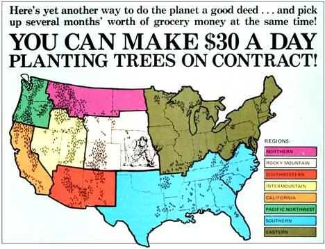
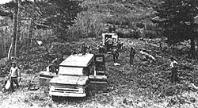

The Halfway Ranger District of the Superior National Forest in northeastern Minnesota paid local people nearly $25,000 for planting trees last year.
Now this was only one district of just one forest located in a single state. Nationwide, the contracts let out for this important reforestation work must run into the millions of dollars annually. And I know of no reason why you shouldn't bid on-and win?one of those contracts for yourself. (Planting trees is healthful outdoor work . . . it's good for the environment . . . and a single contract for northern Minnesota's 30?day planting season can easily put a satisfying $1,000 into a homesteader's pocket.)
The fastest way to restore much of the forest land in this country?after logging, a burn?off, or other such disturbances?is by the hand planting of young trees. This requires a lot of man and woman power during a relatively short season. And, since the U.S. Forest Service doesn't have this kind of labor readily available within its organization, the job is usually contracted out to almost anyone who's willing to do the (admittedly "grunt") work in order to earn some extra money.
My family has taken on these contracts several times during the past few years and, at least up here in Minnesota where the planting is done in the early spring, we like 'em for two reasons: [1] Setting the forests of the future into the ground is a great way to celebrate the end of winter, and [2] the resulting boost to the pocketbook is always a help in carrying us through our homestead's early summer expenses.
The local District Ranger of the U.S. Forest Service is the man to contact if you want to bid on a tree planting job in your area. If you don't know who he is, write to the appropriate Regional Forester (see the list accompanying this article), state your interest in bidding on a contract, and ask for the information and help you'll need in order to place your bid.
Rangers at the Superior National Forest send maps and descriptions of upcoming areas to be reforested to prospective planters in the fall. This gives the workers a chance to look over each unit?as the tracts of land are called-before the snow flies.
(And do look over any unit that appeals to you! I didn't the first year I bid and my ears are still ringing from the clang, clang of my tree planting bar as it bounced off acres and acres of ledge rock while I doggedly searched for just one pocket of soil big enough to set a tree in. You're way ahead of the game to check out rocks, terrain, brush, soil access, and other factors that can affect your tree planting, before you start work on a contract.)
Just prior to the planting season (once again, that's early spring up here in Minnesota) the Forest Service sends a Request for Quotation to all prospective bidders. If you're one of those prospects, you'll be asked to fill out a short form for each unit you're interested in and to quote how much you'll charge per thousand trees to plant the tract. Before submitting one or more of these bids, you should consider:
[1] THE SIZE OF A UNIT. Larger areas usually can be planted more efficiently than smaller ones, because you can set up camp right on the tract of land and work it for long periods without moving.
Size is also an important consideration, especially with larger tracts, since you'll probably have to complete each replanting job within a specified time limit. (We have set as few as 250 trees per day under terrible conditions and as many as 1,200 per day when conditions were ideal. For bidding purposes in this area, however, we estimate that a person can plant about 500 trees per day. This means that he or she can handle a unit requiring 15,000 trees during a 30?day season.)
[2] THE ACCESS TO A UNIT. How far is the tract from your home base and what will the roads be like during the planting season? (Some unpaved roads in our area are a sea of mud in early spring. Bundles of seedlings and the equipment used to set them must be carried in by hand?sometimes for miles?before planting can begin.)
[3] THE UNIT'S CHARACTERISTICS. A steep area is usually more difficult to plant than a flat one. Marshes and rocky terrain slow a planter's progress. It's more difficult to work in heavy clay than in sandy soil. A tract covered with a deep layer of duff-undecomposed or partially undecomposed leaves, vines, pine needles, and other organic matter?is harder to work since the seedlings must be set into the layer of mineral soil below.
[4] A UNIT'S PREPARATION (OR LACK OF IT). After an area is logged, the U.S. Forest Service?or a paid contractor?generally makes an effort to prepare the unit for replanting. Bulldozers are used to "rock?rake" logging debris into windrows, and the duff, slash, and low brush are burned off to make planting easier and to improve the chances of survival and growth for new seedlings. This clears the tract down to mineral soil and makes setting trees much easier. An unprepared site?especially when covered by brush and thick grass?is quite difficult to plant . . . which means slower going and, in turn, a higher bid.
You may, of course, bid on as many units as you wish . . . as long as you state on each Request for Quotation form that you will accept contracts for planting no more than a specified number of trees. (The Forest Service will monitor the awarding of contracts and limit you to that amount.)
If you have absolutely no idea what to quote for replanting a unit, talk to the forester in your area. He's not supposed to actually help you prepare your bid . . . but he can give you an idea of what the previous year's bids were for similar areas.
You may also want to talk to others who've had past experience in this reforestation work. Remember though, if you consult with someone who's still interested in securing contracts for himself, that he (or she) may try to mislead you in order to increase his (or her) own chances for the very job you want.
As a final tip, I've been awarded contracts for bids ranging from $22 to $38 per thousand trees. And, in the future, I'm going to lean toward the higher figure to give me a more reasonable return for my efforts.
You'll be notified prior to planting season if you're awarded a contract. The notification will specify the planting units for which you'll be responsible, the payments you'll receive, and the time in which you must complete the jobs. You'll also be asked to contact the forester in your area to arrange a schedule of tree delivery and to discuss your plans for meeting your contracts' requirements.
(One of the beauties of this work is the fact that the U.S. Forest Service provides the trees, a training session, and ?usually?all the equipment you'll need to complete a job.)
Your forester will accompany you on your first day out to make sure you're working in the right place and that you know what to do. He'll show you how to take care of your seedlings, how to plant them, and how to cover a unit most efficiently. He'll even tell you exactly what he'll be looking for when he comes around later to make an inspection of your work.
This inspection will have a great bearing on your payment after you complete a contract, so pay close attention when the forester explains the mechanics of the examination. In general, he'll be checking out:
[1] SPACING. Within certain limits, the trees you set must be correctly spaced apart. We usually plant ours on an 8-foot by 8-foot grid.
[2] ROOT COLLAR DEPTH. For the best chance of survival, each seedling must be placed in the earth so that the point where its stem meets its roots is located right at ground level.
[3] FIRMNESS OF SOIL AROUND SEEDLINGS. A transplanted tree will soon die if enough pockets of air surround its roots. It is important, then, that the earth is snugly pushed against the roots of each seedling you set. If a transplant can be raised out of the ground easily when you grasp just a few of its needles and pull, you're not pressing the soil firmly enough around the tree's roots.
[4] CURLED ROOTS. The forester will dig up a few of your seedlings to see whether or not you've set them into big enough holes. Trees with roots that are curled up, balled up, or sticking out of the ground probably will not survive.
[5] DRIED ROOTS. Once its roots dry out, a seedling?even if properly planted?will not survive. To guard against this possibility, your inspector will visit your group while it's working and check the stock in each person's bag.
You'll be allowed a certain number of "incorrectly" planted trees (in our area, 5%?or one out of every 20?of the seedlings you set). Every poorly transplanted tree above that number will be deducted from your original contract payment agreement. Example: If you're allowed 5% incorrects but actually misplant 15% of your sets, you'll have 10% deducted from your final payment.
Actually, this deduction is not nearly as bad as I've just made it sound, since?once you get into the groove of planting?it's very unlikely you'll ever encounter a deduction problem.
This planting of trees is not the only work you can contract with the Forest Service. In the past we've rehabilitated campgrounds, constructed portages, and harvested pine cones. And I know other people who've seeded roadsides, cleared trees, burned slash, thinned out snags (dead treed, cleaned up recreation areas, built and maintained hiking and snowmobile trails, and pruned trees. Contact your local forest ranger for these and other possibilities.
For general information about contracting work from the companying this article . . . and then contact the appropriate U.S. Forest Service, determine your region from the map ac? official listed below.
Northern Region
Federal Building
Missoula, Montana 59801
Rocky Mountain Region
Federal Center, Building 85
Denver, Colorado 80225
Southwestern Region
517 Gold Avenue S.W.
Albuquerque, New Mexico 87101
Intermountain Region
324 25th Street
Ogden, Utah 84401
California Region
630 Sansome Street
San Francisco, California 94111
Pacific Northwest Region
319 S.W. Pine Street
Post Office Box 3623
Portland, Oregon 97208
Southern Region
50 Seventh Street N.E.
Atlanta, Georgia 30323
Eastern Region
633 West Wisconsin Avenue
Milwaukee, Wisconsin 53202
Alaska Region
Post Office Box 1628
Juneau, Alaska 99801
Unlike large?scale reforestation work in Minnesota?which is done almost entirely during a 30-day period in early spring?the replanting of commercial?sized tracts of trees in Oregon goes on from October to June. And one of the prime contractors for the jobs (which are let out by the Forest Service, Bureau of Land Management, and private timber companies) is a loose-knit cooperative known as the Hoedads.
The Hoedads (who take their name from the adze-like tool with which they set Douglas fir seedlings) were organized by Jerry Rust, John Corbin, and John Sundquist. The two Johns and a Jerry got together in 1970 to bid on a 60-acre Forest Service contract, won the job, successfully fulfilled their contract, bid on other work, brought in friends to help with the new contracts, and so on.
Today, the Hoedads' membership (each individual in the group holds an equal co-op share) ranges from 150 to 200 people divided into 12 work crews identified by nicknames such as "Cougar Mountain" and "Mud Sharks". Most of the members are between 18 and 32 years old, about 30% are women, and they come from Oregon farms, affluent suburbs, and urban ghettos. Some hold college degrees, most don't, and all profess a love for the outdoors and a desire to improve the environment.
The Hoedads calculate that each member of a work crew can plant 500 trees a day (the fastest set 1,000 or more) and figure their bids so that the cooperative earns ten cents for each seedling the group sets. Individual planters take home about eight cents of this dime . . . and the other two cents are split into a cash reserve fund (each Hoedad must accumulate $1,000 as liability insurance) and a general operating fund (for equipment, maintenance, transportation, and the reliability bonds required by most contracts). So far, the cash reserve fund has worked pretty much like a savings account . . . since every person who has quit the cooperative has been repaid every nickel that he or she has put into this kitty.
Perhaps the most noticeable thing about the Hoedads is the co-op's esprit de corps. Rather than drive back and forth each day to planting sites, each work crew camps out in tents and buses right on the tract of land that's being worked. Living together this way?sharing cooking facilities and food . . . facing long hours in rain, mud, cold, and rugged terrain shoulder to shoulder . . . getting to know each other around a campfire at night?has created a solid core of close, dedicated, and stable planters who genuinely like, trust, and rely on their fellow cooperative members.
As a result, the survival rate of Hoedad?planted seedlings is close to a phenomenal 99% (the Forest Service is pleased with only 85 to 90%). And, according to Jerry Rust, the cooperative set more trees?one million?in just the past season alone than the famous Civilian Conservation Corps did during its entire existence in the 1930's!
Perhaps the Hoedads are so successful because they work, instead of administrate. The position of president, currently held by David Straton, constitutes the organization's entire executive branch. All of the cooperative's decisions (except in specific instances, when a referendum of the entire membership is called) are made by a council composed of one representative from each crew . . . and this council is advised by committees (Bidding, Treasury, etc.) as necessary.
At present, the Hoedads are experimenting with the idea of diversifying (as a group) into other occupations, especially during the summer when there are no trees to plant. Some crews have torn down and recycled old buildings and done other salvage work. Others have begun tree nurseries in which they propagate seedlings which are then sold to the private timber companies and government agencies that let out reforestation contracts. Still others hire out to fight forest fires in the dry season.
The Hoedads have also?both of necessity and by choice?entered the political arena to contest the treating of fir seedlings with a chemical deer repellent called thiram. Co-op members have found that the treatment causes nausea and headaches among planters who handle such seedlings, and the Hoedads have usefully sponsored a bill in the Oregon State Legislature which will ban thiram by 1977.
Thus does a high-spirited, altruistic cooperative group of young men and women blend the often conflicting aims of idealism and pragmatism into an earth-oriented way of life that we can all envy. Go get'em, Hoedads!
|
 |
 |
|